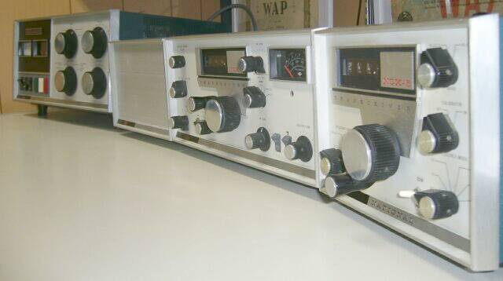
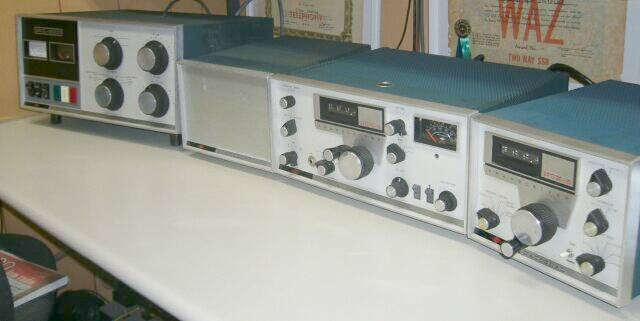

 |
ＵＳ ナショナル社の１９６５年の製品（付属していた取説に購入日の記載あり！）です
もう管球式のものには手を出さないと心に決めていたのですが・・・単に、この写真が撮りたかっただけなのかもしれません！？
特徴の一つは、アナログＶＦＯでありながら、メカニカル・カウンタにより周波数のデジタル表示、です
追い込むことで、読み取り誤差±１ＫＨｚの範囲内には納めることが出来ました
受信ＡＮＴコイルを省略した送信πマッチ兼用タイプなのですが、ＲＦ２段ＩＦ３段増幅という構成が取られているのも特徴のひとつかも知れません
一式／フルラインを、並べるだけ並べて写真に撮ってみました |
 |
| ある時代を彷彿させるラインアップの完成です（愛でて楽しむ！？） 撮影は、2014.01 |
 |
ＮＣＬ-２０００
オリジナルは、８１２２ ｘ２ のリニアアンプ G1に電流が流れたとたんスプラッタが、というウワサの球！？
それでも、Ｇ１電流計は２０ｍＡスケールと、設計が古いと言えばそれまで！
ＮＣＸ-Ａ
ＮＣＸ-３ ＮＣＸ-５用の純正スピーカ内蔵ＡＣ電源です
ＮＣＸ-３に使用の時は、中圧の抵抗を１本外すように説明されています（消費電流の違いを調整、でしょう）
高圧（７００Ｖ）は、ブリッジ整流・チョークインプットの平滑回路になっています
スピーカについては、楕円４ｘ６インチのものを内蔵という記載があるだけ（さすがに電源部！）
ＮＣＸ-５
２０Ｔｕｂｅ・２Ｔｒ 構成
当時としては、ちょっと高級と思われる ６．０２ＭＨｚ８ポール・クリスタルフィルタ（シェープファクタ：１．７ ６ｄｂ幅：２．８ＫＨｚ）を使用した、コリンズ・タイプ（ダブル・コンバージョン）の標準的なＨＦ５バンド・トランシーバ（出力１００Ｗ）です
ＳＳＢ、ＣＷはもちろん、ＡＭにも対応しています（送受共）
ハイフレ・クリスタルフィルタの採用、この時期にしては先進的と思われるクラリファイア機能を搭載のVFO-ＯＳＣは、半導体（トランジスタｘ２使用）と、あのＣｏｌｌｉｎｓを一歩前に進めたような設計がなされています
ＶＸ-５０１
ＥＸＴ-ＶＦＯは、４Ｔｒ構成（２Ｔｒ ＦｉｘＯＳＣ を内蔵） マーカーはオプション
ＥＸＴ-ＶＦＯにマーカーを内蔵？ 本体のＥＸＴ－ＶＦＯの接続コネクタ（ＧＴソケット）にそのままこのマーカーオプションを差し込んで使えるように設計されているところが、また面白い！（合理的？）
ダイヤル照明ランプも、ＤＣ２５０ＶからＴＲ回路用１８Ｖを作るために、直列抵抗よろしく、その上Ｆｕｓｅ兼用、となかなかユニークな設計がなされています
ここにあるものは、先オーナーの段階で、別途１２Ｖの定電圧電源を内蔵させたもので、その電源ＳＷとして小型のトグルＳＷがパネルに取り付けられています（オリジナルには無いもの）
私の記憶では、この後、ＮＣＸ-２００/ＮＣＸ-５００（見た目は、別途ご紹介のＮＣＸ-３に近く、ＶＦＯは真空管、プリミックスタイプ・シングルコンバージョン／ＲＦ１・ＩＦ２段構成・・・ＹＡＥＳＵ ＦＴ-２００は、この構成を真似た？、ＮＣＸ-５００は、ファイナル６ＬＱ６ｘ２／入力５００Ｗで、パワー当たりのコストパフォーマンスは良かったが、ＮＣＸ-５を思えば、全て簡易なイメージ）、ＮＣＸ-１０００（ファイナル・ドライバ以外は半導体、ファイナルは８１２２ ｘ１／入力１ＫＷ 周波数表示は、アナログとデジタル／７セグメントＬＥＤの２種類があったような・・・）と、パワーアップ路線(パワーあたりのコスト／パフォーマンス追求路線）を進めてきて、そこで終息したかと思います |
メカ的要素を中心に、簡単に手を入れてみただけですが、それなりの動作をしています
もちろん、電気的性能は、昨今のマシンに勝てるはずはありません
が、販売後、ほとんど半世紀が経とうとする無線機ですから、ある意味「素晴らしい！」の一言です（今の無線機が、５０年後に元通り動くとは、正直思えません）
時間ができたら、もう少し手を入れてみようと思います |
| ＮＣＸ-５の詳細、あるいは実用に向けた取り組みは → こちら |
| 2014.01 ＪＡ４ＦＵＱ |